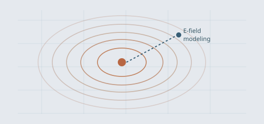

← Back to selected research
CROSS-DISCIPLINARY · MODELING + EXPERIMENT
Connecting electric-field models with physiology
Use FEM simulations, electrode configurations, and experimental response measurements to reason about stimulation efficacy and model limitations. Contributed to preclinical evaluation of transnasal DeepFocus stimulation.
COMSOL ROAST / DeepROAST Model–experiment comparison

CROSS-DISCIPLINARYConceptual model–experiment illustration.
PROJECT OVERVIEW
From idea to evidence.
My contribution
Developed and interpreted computational electric-field models, compared candidate electrode configurations, and connected predicted fields to electrophysiology questions.
Findings & significance
Contributed to conference and collaborative work investigating the feasibility and limitations of transnasal brain stimulation.